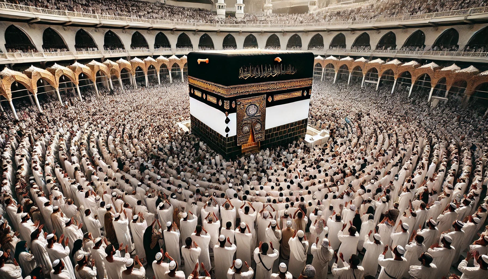

Complete Guide to a Smooth and Hassle-Free Umrah Journey 2025
Umrah holds a special place in the hearts of Muslims worldwide, offering profound spiritual benefits and serving as an act of deep devotion. This comprehensive guide will help you plan and execute your 2025 Umrah journey with confidence and peace of mind.
Understanding Umrah: Its Meaning and Importance
Umrah, often referred to as the 'lesser pilgrimage,' is a voluntary Islamic pilgrimage that holds immense spiritual significance. Unlike Hajj, Umrah can be performed at any time throughout the year, making it more accessible for Muslims worldwide.
Key Differences Between Umrah and Hajj
- Timing: Umrah can be performed anytime, while Hajj has specific dates
- Duration: Umrah typically takes a few hours, Hajj spans several days
- Obligation: Umrah is voluntary, Hajj is mandatory for capable Muslims
Step-by-Step Guide: Preparing for Umrah
Visa Requirements
- Valid passport with at least 6 months validity
- Completed visa application form
- Recent passport-sized photographs
- Proof of vaccination (including COVID-19 requirements)
- Meningitis vaccination certificate
- Return flight tickets
- Hotel booking confirmation
Estimated Budget and Costs
Basic Cost Breakdown
- Flight tickets (round trip): $800-1,500
- Accommodation: $50-200 per night
- Visa fees: $100-150
- Local transportation: $200-300
- Food and meals: $20-40 per day
- Additional expenses (souvenirs, emergency funds): $300-500
Total estimated budget: $2,000-4,000 per person (varies based on season and accommodation choice)
Ihram Guidelines
For Men
- Two pieces of white, unstitched cloth
- Comfortable sandals
- No headcover during ihram state
For Women
- Regular modest Islamic clothing
- Head covering (hijab)
- Avoid face covering during ihram
Health and Wellness During Umrah
- Stay hydrated - drink plenty of Zamzam water
- Wear comfortable footwear for extensive walking
- Carry basic medications and prescriptions
- Use sunscreen and umbrella during day time
- Take regular breaks between rituals
- Maintain proper hygiene
Getting Around in Makkah
Transportation Options
- Haramain High Speed Railway: Connects major cities
- Local buses: Regular services around Haram area
- Taxis and ride-hailing apps
- Hotel shuttle services
Tip: Most hotels within 2km of Masjid Al-Haram offer free shuttle services.